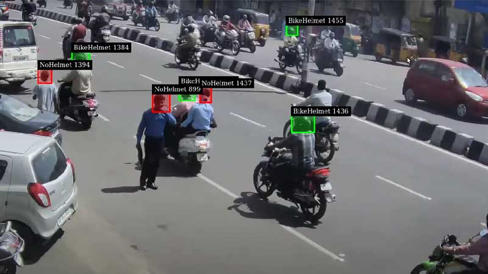
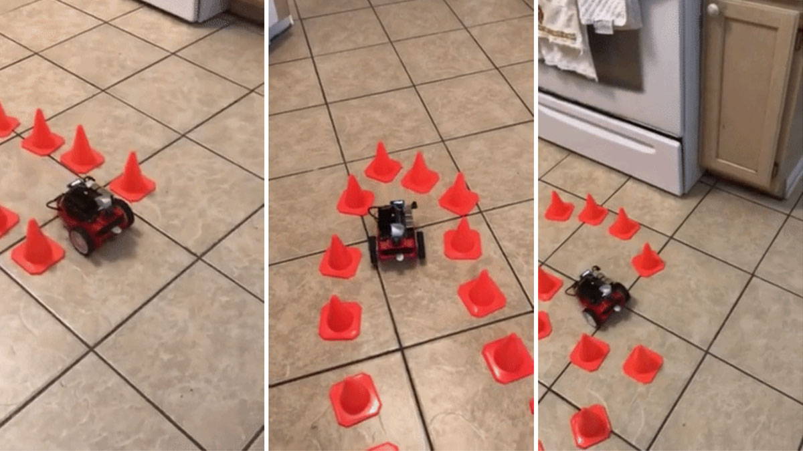

AI Projects
Table of Contents
- 1. NVIDIA Developer
- 1.1. BabyWatcher
- 1.2. JetClean
- 1.3. Nanosaur
- 1.4. LF2 - Easy Classroom Monitoring Tool for Teachers
- 1.5. Dart Score Detector
- 1.6. MaskEraser
- 1.7. Track and Count People with Jetson Nano
- 1.8. Helmet Detection with Deepstream
- 1.9. Safe Meeting
- 1.10. Rock-Paper-Scissors
- 1.11. Open DataCam
- 1.12. Transfer Learning with JetBot & Traffic Cones
- 1.13. People Flow Analysis System
1. NVIDIA Developer
1.1. BabyWatcher
對於新生嬰兒來說，翻身和趴著可能有 窒息的風險 ，因此確保他們可以睡覺或保持俯臥姿勢是關鍵。 為了他們的健康，BabyWatcher 會監控新生兒的位置並檢測他們是處於俯臥位還是仰臥位。 為了創建基於 SSD-Mobilenet 的遷移學習模型，訓練材料以 CVAT 進行註釋，匯出為 Pascal VOC 格式，合併為單一資料集，並自動拆分為訓練/驗證。 然後將最終的遷移學習模型轉換為 ONNX 格式。
1.2. JetClean
JetClean 是一款小型樂高清潔機器人，能夠在您的臥室周圍自動導航並保持臥室整潔！ 機器人的機身基於 Waveshare JetTank AI 套件，與 NVIDIA 的 JetBot 相容，包括一個方便的旋轉底盤和一個配備抓取機構的 4 自由度機械手臂。 該專案由 Jetson Nano 提供支援，能夠透過運行 OpenCV 並偵測來自內建相機的視訊串流中的座標來偵測多種顏色的樂高得寶 (Lego Duplo) 零件。 一旦偵測到碎片，就會計算 X、Y 座標，機器人導航到選定的目的地，並將它們收集到貼在 JetClean 背面的籃子中。
1.3. Nanosaur
Nanosaur 是 Jetson 恐龍機器人。 它旨在在您的辦公桌上漫步，並且是開源的、完全可 3D 列印並且基於 ROS2 和 Isaac ROS。 透過此平台，您可以學習 ROS2 和 NVIDIA Isaac ROS GEM 的基礎知識。
1.4. LF2 - Easy Classroom Monitoring Tool for Teachers
在 AWS 和 Jetson Nano 上運行的簡單課堂監控工具，以 Vue 和 Flask 編寫。 使用 Tensorflow 和 AWS Rekognition 實現臉部和情緒辨識。 透過將帶有攝影機的 Jetson Nano 放置在教室前面，您將能夠使用網路儀表板監控您的教室。 從儀表板中，您可以了解有多少學生來到您的班級，以及教室的整體氛圍。 透過積極性與時間圖表，您甚至會知道您的笑話是否有效！
1.5. Dart Score Detector
該應用程式使用 SSD-Mobilenet 神經網路進行物件偵測，以自動計算飛鏢遊戲的得分。 該應用程式可偵測公牛（飛鏢靶的中心）和放置在飛鏢靶上的箭頭。 SSD-Mobilenet 面臨的一項挑戰是準確地確定分數，因為飛鏢分數有 61 種不同的模式，它們是數字 1-20 和倍數（單倍、雙倍、三倍）+ 公牛的組合。 為了克服這個問題，該項目使用訓練模型的原始資料集來更準確地估計分數
1.6. MaskEraser
COVID-19 在世界各地的傳播造成了許多後果。 您用智慧型手機隨意拍攝的照片也不例外。 COVID-19 傳播後拍攝的照片顯示家人和朋友都戴著口罩。 現在，不戴口罩就很難出門。 口罩對於防止 COVID-19 的感染和傳播很重要，但另一方面，佩戴口罩會使 AI 無法識別您的臉部。 這不僅僅是人工智慧。 MaskEraser 使用 Jetson 開發人員套件自動對網路攝影機的視訊來源使用深度學習，僅刪除偵測到的臉部的遮蓋部分。 然後，被移除的部分會在人工智慧的想像中進行預測和繪製。
1.7. Track and Count People with Jetson Nano
該存儲庫提供了即時人員追蹤和計數系統。 它基於 SSD-Mobilenetv1-coco 來檢測人員並使用 SORT 進行追蹤和計數。
1.8. Helmet Detection with Deepstream

使用 DeepStream SDK 的頭盔偵測智慧視訊分析解決方案。 該項目是一個概念驗證項目，試圖展示透過監視攝影機和車載 Jetson 平台可以對道路進行監控，以確保摩托車和自行車騎士的安全。 頭盔偵測應用程式由由 Deepstream 和 NVIDIA Jetson Xavier NX 提供支援的智慧視訊分析管道組成。
1.9. Safe Meeting
Safe Meeting 會在視訊會議期間監視您，如果它看到您的內衣，視訊會立即靜音。 相機連接到 NVIDIA Jetson Nano。 該攝影機緊鄰用於視訊會議的網路攝影機放置，以便捕獲同一區域。
1.10. Rock-Paper-Scissors
這是用機器實現石頭剪刀布遊戲。 Jetson Nano 開發套件用於人工智慧手勢識別。
1.11. Open DataCam
量化世界—利用這款離線輕量級 DIY 解決方案監控城市景觀。 簡單的設定讓您成為城市資料探勘者。 安裝在 NVIDIA Jetson 板 + Logitech 網路攝影機上，運行 yolo 和我們建造的追蹤軟體，對直播中的汽車、行人和摩托車進行計數。 完成後可透過智慧型裝置存取、定義追蹤、計數和匯出資料的區域。 您可以使用該系統進行測量，而無需保存視訊數據，不會侵犯計數物件的數據隱私。 資料的去向以及計數演算法期間發生的情況都是透明的。
1.12. Transfer Learning with JetBot & Traffic Cones

[當]在建築區域[周圍]行駛時，我[認為]自動駕駛汽車在[周圍]交通錐上行駛將是多麼具有挑戰性。 事實證明，使用 NVIDIA 的 JetBot 並不那麼困難，只需幾百張圖像，您就可以訓練最先進的深度學習模型，教您的機器人如何在玩具交通錐迷宮中[導航]，只需使用機載攝像頭，沒有其他感測器。
1.13. People Flow Analysis System
使用Jetson和Deepstream SDK開發的低成本人流分析系統，整合了高品質的開源軟體和函式庫。 該系統能夠偵測並量化攝影機視野內的人員。 每次檢測都透過唯一的 ID 和綠色邊界框進行追蹤。 當偵測到的人在同一地點停留一定時間時，系統將向授權的 Azure Iot Hub 和 Android 手機發送訊息。 訊息警報包含時間、曲目 ID 和位置。
**